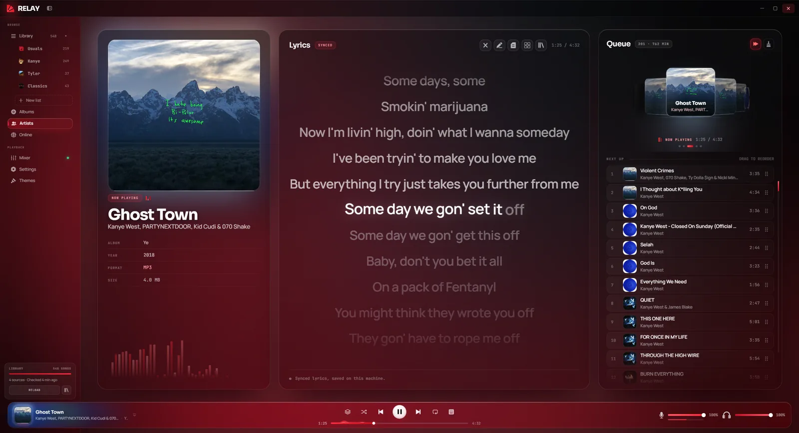
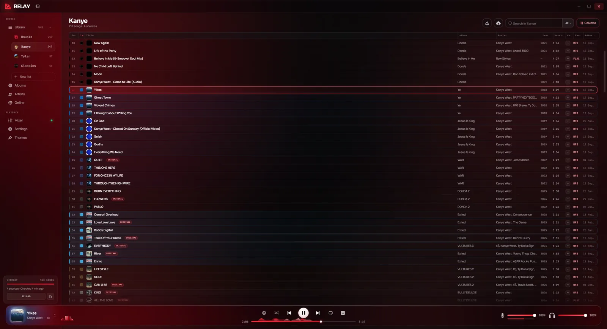

Your music and your soundboard in one place, with a virtual microphone for Discord and friends.
Download for Windows
Latest version · Windows 10 & 11 · 125 MB
No adsFreeForever

What it does
Everything you play, in one app
Your library
Albums, artists and playlists from your own files, with synced lyrics and themes in any colour.
Soundboard
Drop songs on pads, cut them to the exact moment and fire them with a hotkey, over your music.
Through your mic
Send your music and sounds into Discord calls and games, mixed with your own voice.
Mixer
Music, sounds and microphone on their own faders, each one to the device you pick.
On your Discord status
"Listening to Relay" with the song, its cover and a live progress bar.
Online
Search the web for a song and add it to your library in a couple of clicks.
Screenshots
Take a look
